Welcome To The Colorful World Of Tarantulas!
In general we can examine the tarantulas in 3 groups.
-
Tree Species
-
Avicularia
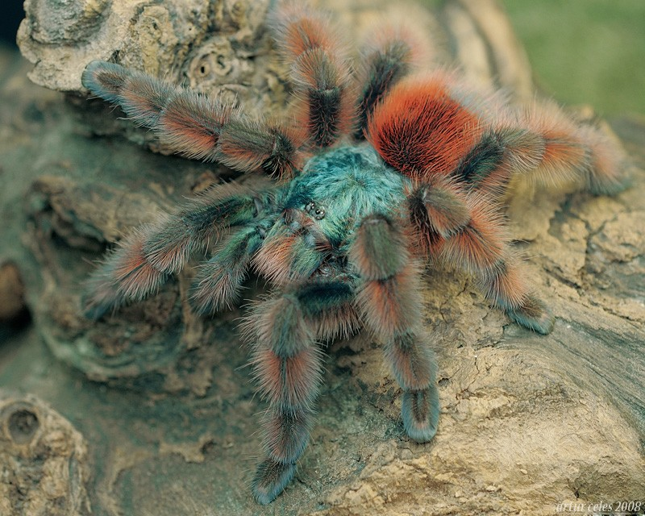
Cyriopagopus
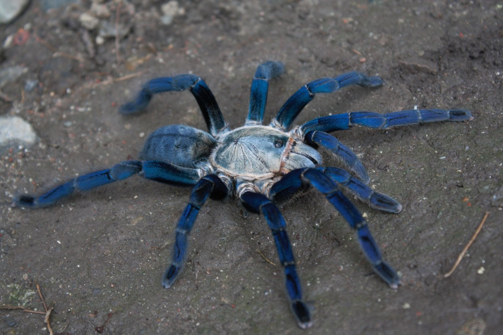
Encyocratella
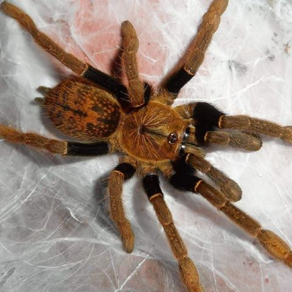
Heteroscodra
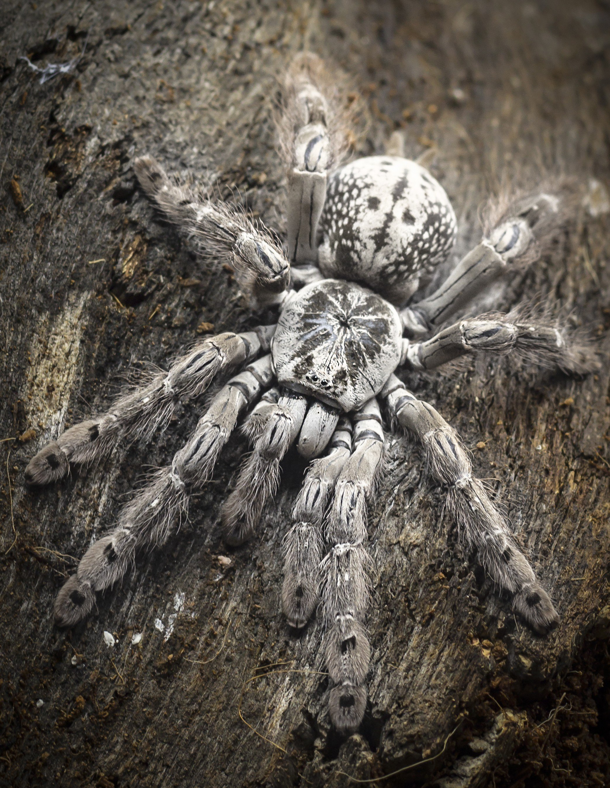
Iridopelma
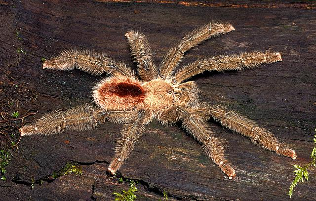
Lampropelma
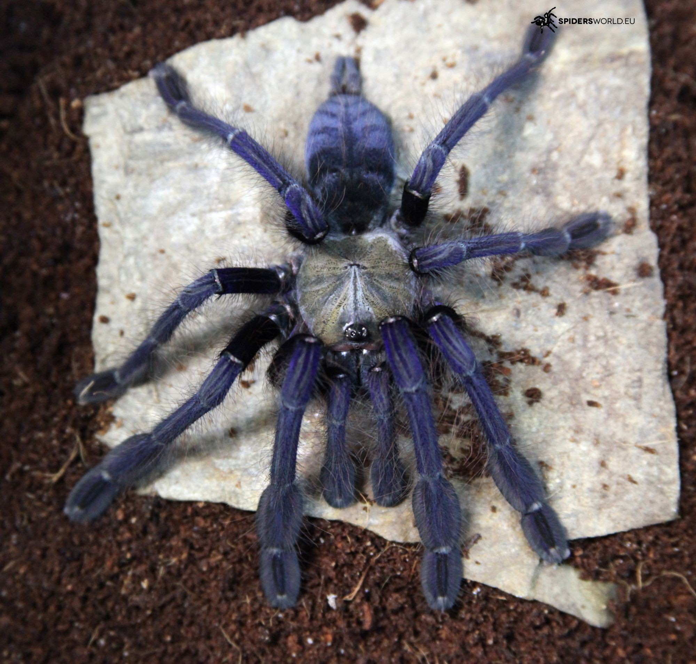
Poecilotheria
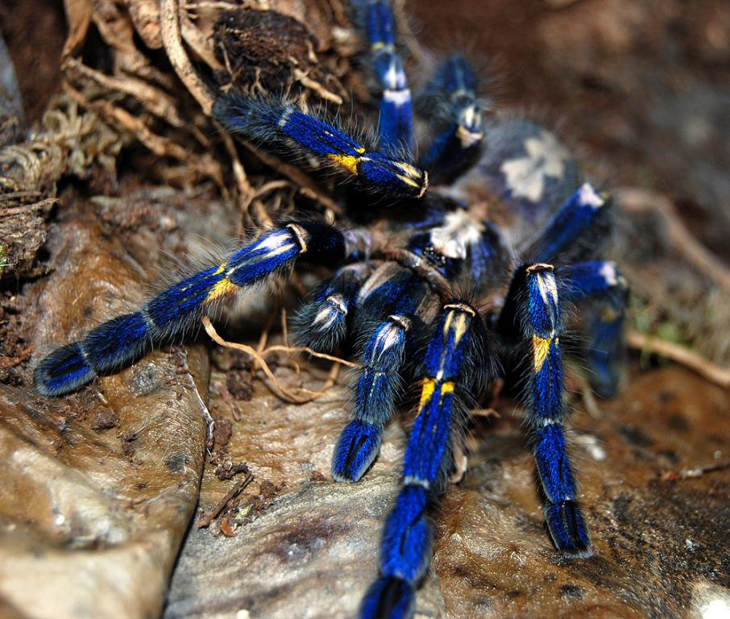
Avicularia is a genus of the family Theraphosidae containing various species of tarantulas. The genus is native to tropical South America. Each species in the genus has very distinguishable pink foot pads.
One of the most notable features of the Avicularia species is their odd method of defense. When threatened, their first choice is to jump or run away as quickly as possible – occasionally, though, they will launch a jet of excrement at the perceived threat. Adults are capable of good accuracy and a range of 0.5–1 m (2 to 3 feet).
There is also a belief that they may be the reason behind rumors of "flying spiders" in the rainforests they are native to, as they are quite adept at jumping. Their legs, however, prevent them from gaining much height in making a jump. Avicularia avicularia are among the tarantulas most commonly kept as pets.
The species formerly placed in Haplopelma are medium to large spiders; for example, Cyriopagopus schmidti females have a total body length, including chelicerae, up to 85 mm (3.3 in), with the longest leg, the first, being about 70 mm (2.8 in) long. The carapace (upper surface of the cephalothorax) is generally dark brown. They have eight eyes grouped on a distinctly raised portion of the cephalothorax, forming a "tubercle". The forward-facing (prolateral) sides of the maxillae have "thorns" which act as a stridulating organ. The first leg is usually the longest, followed by the fourth, second, and third. Mature females have an M-shaped spermatheca. Mature males have a spur on the forward-facing sides of the tibiae of the first pair of legs and a pear-shaped palpal bulb with a wide, curved embolus.
Encyocratella is a genus of spiders in the Theraphosidae family. It was first described in 1907 by Strand. As of 2017, it contains only one species, Encyocratella olivacea, found in Tanzania.
These tarantulas can reach their full size after about 3 years. When fully grown, these species can reach leg-spans of up to 13 centimetres (5.1 in). These spiders are characterized by their chalky white coloration with mottled black and brown markings. Notably, these tarantulas have very thick rear legs, leading many to believe that they are baboon spiders, however, they are not in the baboon spider subfamily of Harpactirinae.
Heteroscodra maculata specimens are quite fast, defensive and possess potent venom. As these are old-world species, they do not possess urticating hairs, which further encourages them to bite as a primary defense. They are an arboreal species, though younger specimens have been noted to burrow during their first few months of life. Females tend to reproduce readily, though sexual cannibalism may occur. Egg sacs are reported to contain between 75 and 130 spiderlings.
Iridopelma is a genus of spiders in the family Theraphosidae (tarantulas), native to Brazil. It is characterized by very hairy legs and a bright red body with black markings.
Lampropelma is a genus of spiders in the Theraphosidae family. It was first described in 1892 by Simon. As of 2016, it contains 3 species from southeast Asia.
Lamprobelma is a large, arboreal species of tarantula from Malaysia and Singapore. These spiders have been known to grow in excess of 9 inches (23 cm) across. The legs are an intense blue with a brown or gold carapace. The male is usually not as vibrant, the species exhibiting sexual dimorphism. The generic placement of the species has been questioned, and specimens identified as males of this species may actually be from a different species.
Poecilotheria is a genus of the spider family Theraphosidae currently containing 14 or more species of arboreal tarantula, commonly known as tiger spiders. The genus is known for vivid color patterns, fast movement, and potent venom compared to other tarantulas. The genus is native to Sri Lanka and India. The name Poecilotheria is derived from Greek poikilos - spotted and therion - wild beast.
-
-
Ground Species
Augacephalus
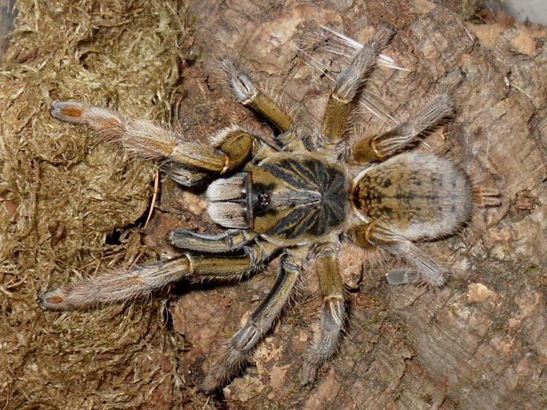
Ceratogyrus
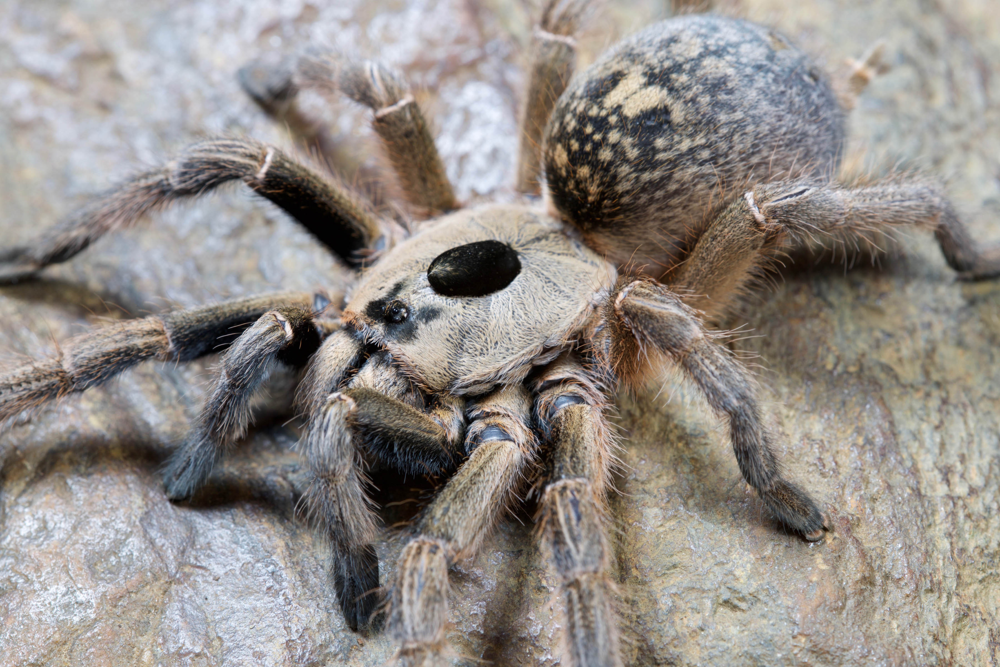
Chilobrachys
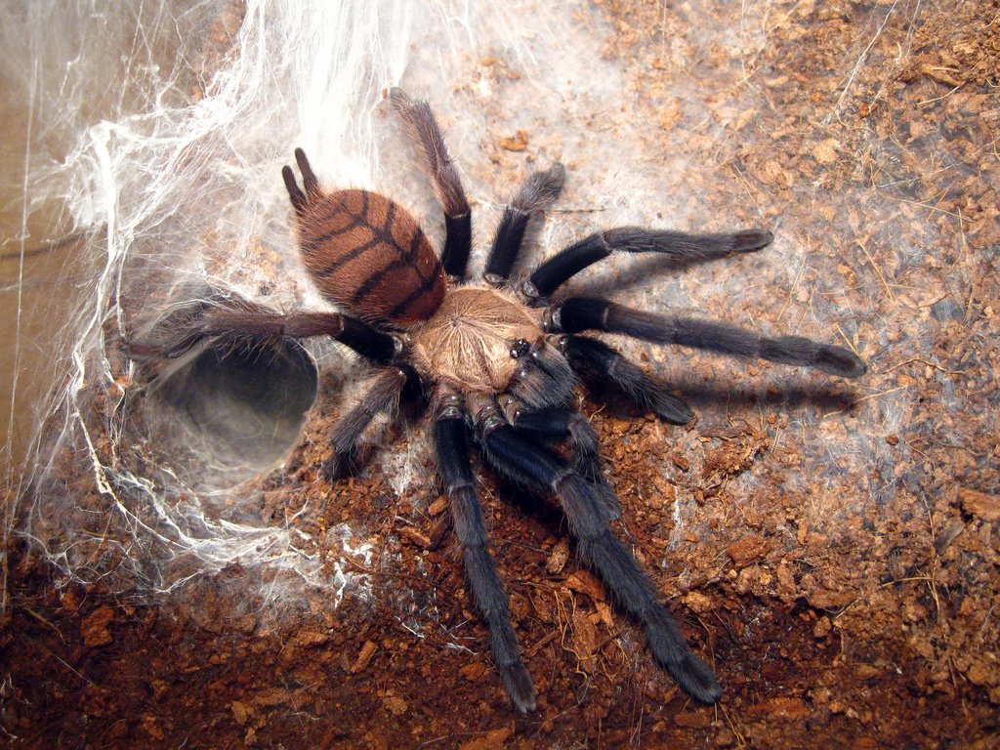
Ephebopus
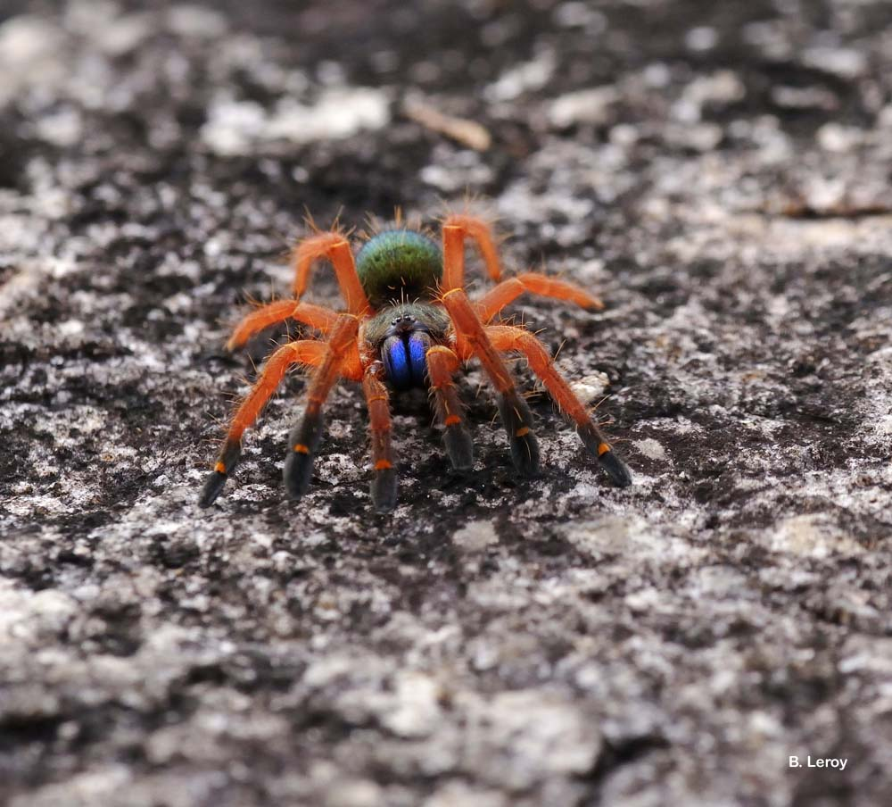
Haplopelma
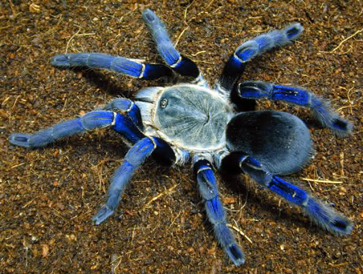
Hysterocrates
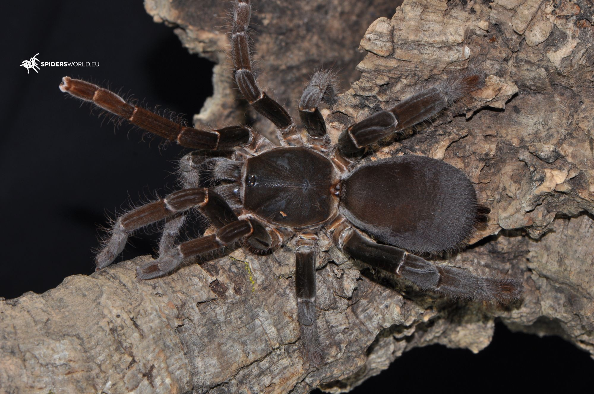
Ornithoctonus
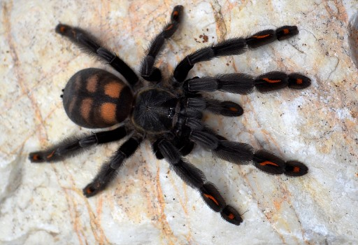
The type species of Augacephalus is A. breyeri which was described as Pterinochilus breyeri by Hewitt in 1919. In 2002, Gallon placed it a new genus, which he erected in the same paper, Augacephalus
Its name comes from the Greek auga meaning "sun rays" and kephale meaning "head" which refers to the prominent, radial cephalothorax striae present in most species
Ceratogyrus is a genus of spiders in the family Theraphosidae (tarantulas).Found in southern Africa, members of genus are commonly called horned baboons, for the foveal horn found on the peltidium in some of the species within the genus.
Ceratogyrus is readily distinguished from all other African theraphosid genera by the combined presence of a retrolateral cheliceral scopula composed of plumose, stridulatory setae and the strongly procurved fovea. The fovea is typically strongly procurved and in some species surrounds a distinct protuberance. this protuberance may take the form of a simple posterior extension of the caput, a low-set plug or a prominent, discrete conical projection. All Ceratogyrus species possess a pale yellow anteriorly placed, transverse, sub-abdominal band. This feature is not distinct in other Harpatirinae except Augacephalus junodi. The absence of dense, ventral femoral fringes on the palpi and legs I and II distinguish Ceratogyrus spp. from female A. junodi.
Chilobrachys is a genus of spider in the family Theraphosidae, found in south and east Asia.
Ephebopus murinus (Walckenaer, 1837), also known as “Yellow knee skeleton” and “Skeleton tarantula”, is a very remarkable bird spider due to its skeleton pattern on the legs from Brazil. The genus belongs to the subfamily of the Aviculariinae, mostly consisting arboreal bird spiders. Species from the Ephebopus-genus however, except for Ephebopus rufescens, are known to be burrowing bird spiders. Spiderlings from the genus have been observed living semi-arboreal (more info). Contrary to other new world tarantulas, Ephebopus is being armed with urticating setae on pedipalps and femura and not on the abdomen.
The cobalt blue tarantula is a medium-sized tarantula with a leg span around 13 cm (5 in). The cobalt blue tarantula is noted for its iridescent blue legs and light gray prosoma and opisthosoma, the latter of which may contain darker gray chevrons.Males and females look the same until the ultimate (final) molt of the males. At this point, the male exhibits sexual dimorphism in the form of a light tan or bronze coloration and legginess. Additionally, males gain a palpal bulb on the pedipalps and tibial apophyses (mating hooks). The female eventually becomes larger than the male and lives years longer.The cobalt blue tarantula is a fossorial species and spends nearly all of its time in deep burrows of its own construction.
This is a burrowing spider and ranges in color from a dull black and gray to a rusty orange/brown. It is black when freshly moulted (post-moult) and turns brown just before a moult (pre-moult). Its eyes are small and weak and only able to judge light levels.
Its abdomen is oval in shape with a diameter up to 4 inches (100 mm). Although it has hairy legs, this tarantula is an Old World species and does not have urticating hairs on its abdomen. (Urticating hairs are hairs found in most new world species (those from North and South America) that can be shed in defence, they are barbed and may cause severe itching.)
t also has a leg span which may reach 8 inches (200 mm). This tarantula, in common with the rest of the family, has downward-facing, parallel fangs, used like pickaxes rather than pincers.
Adult males have smaller abdomens than females. Male pedipalps are club shaped, but it may take up to 4 years for differences between male and female to show, since the average male lifespan is about 4 years and the leg span of the male is roughly 5”. These tarantulas spin very little silk - what silk they do spin is used for egg sacs or to line their burrows - they do not make webs. These tarantulas in particular burrow very intricate burrows.
Ornithoctonus aureotibialis von Wirth & Striffler, 2005, also known as the “Thailand golden fringe”, is a very stunning and remarkable bird spider due to its behavior and coloration from Thailand, Myanmar and Malaysia. At the level of the patella the deep black femura are being seperated from the dark grey legs by a ring. On the retrolateral side of the first 2 legpairs patella and tibia possess beautiful golden/yellow hairs, which is the reason why she’s given both scientific and common name. Ornithoctonus aureotibialis was known in the hobby for a long time as Haplopelma sp. aureopilosum, after which she’s been baptized to Haplopelma chrysothrix by Schmidt & Samm in 2005. This name, however, was declared invalid ( source). The subfamily of the Ornithoctoninae (known as “earth tigers”, due to the patterns on their abdomen) mostly consists burrowing bird spiders living deep underground, except for spiders of the Cyriopagopus– and Phormingochilus-genus. The spiders are very timid and occasionally visible at night.
-
Tunnel Species
Acanthoscurria
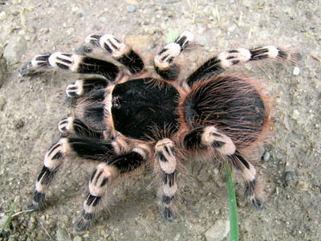
Aphonopelma
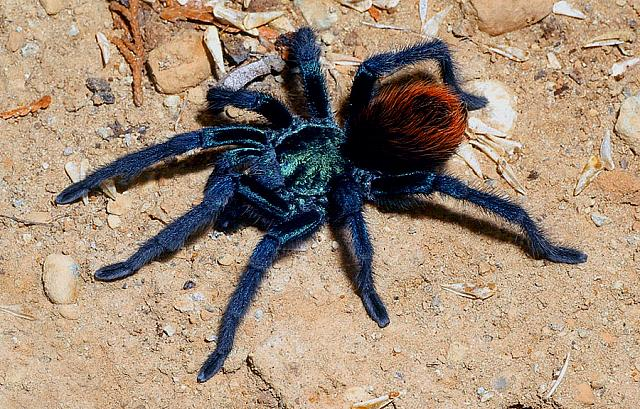
Bonnetina
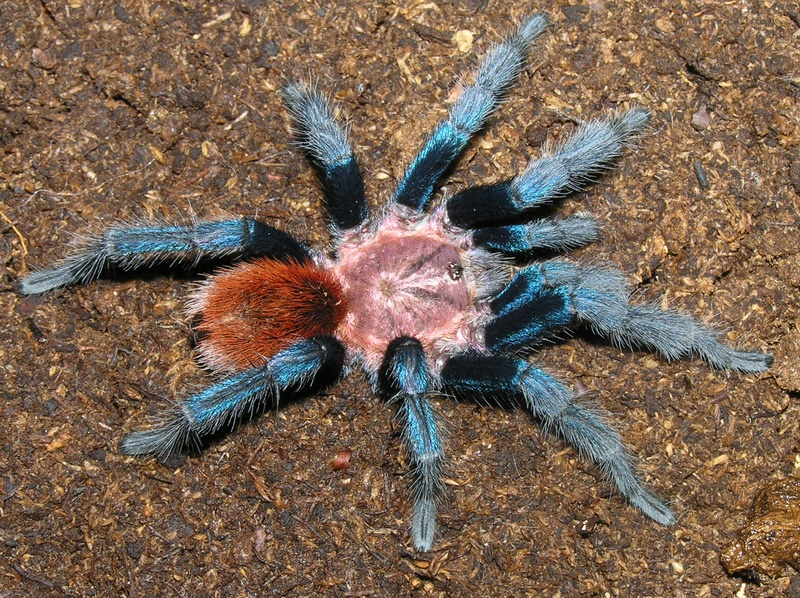
Brachypelma
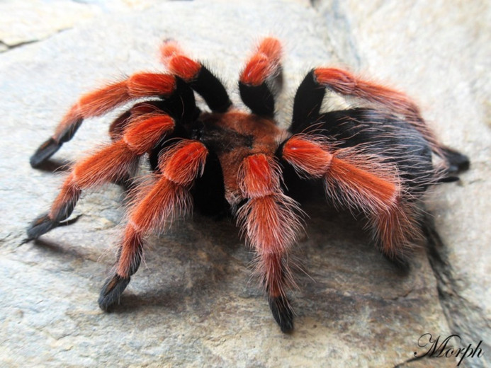
Chaetopelma
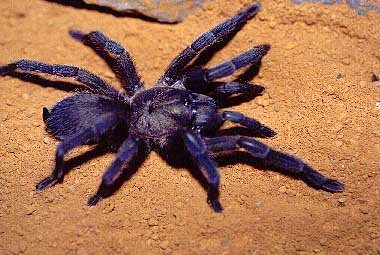
Chromatopelma
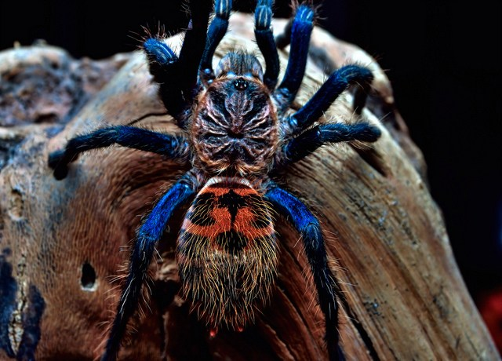
Cyclosternum
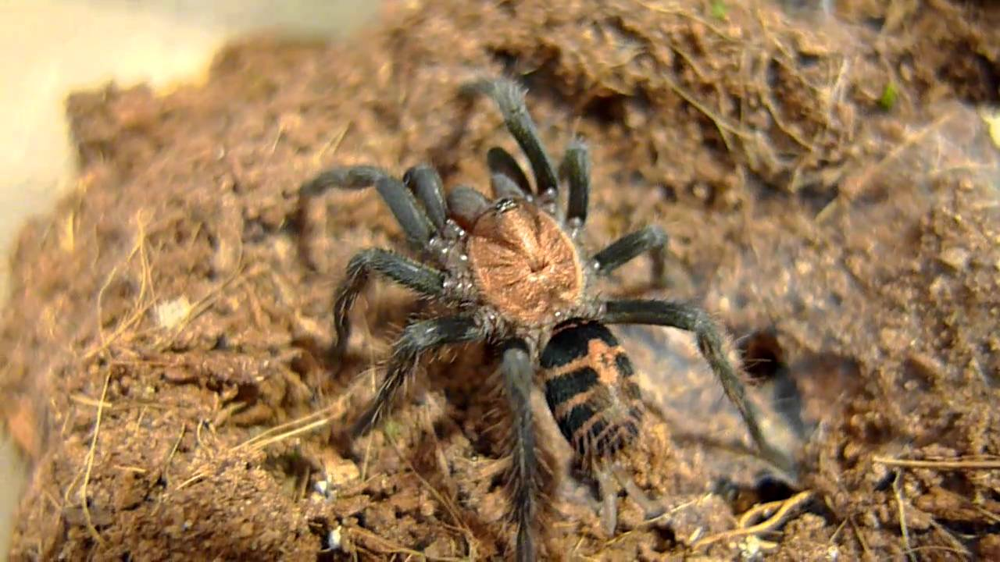
Its body and legs is a deep black color, though occasionally the legs may be slightly lighter in coloration. This contrasts the bright white bands on its legs, which is generally considered to be the main reason for its subjective beauty. The males are smaller and less intensely colored. This is a larger species of tarantula than the norm, with the length of the body reaching up to 9 centimetres (3.5 in). These tarantulas are fast growing, usually taking around 3–4 years to reach a mature leg-span of 8.5 inches for females.
Aphonopelma is a genus of tarantulas, members of which are native to the Americas. It includes nearly all of the North American tarantulas north of Mexico and a considerable part of the tarantulas which range into Central America. About 90 species have been described, but many, if not most, of these are inadequately studied and very little is known about them. Most are large, and like other New World tarantulas, they have urticating hairs. Most are docile in captivity. Their taxonomy is poorly understood and species are difficult to tell apart, especially those that are brown or black without other pattern. In captivity, they are usually fed crickets; in the wild, they eat most insects, including crickets, grasshoppers, cockroaches, mantises, and beetles. Most species found in the Southwestern United States have an adult legspan of 4.5 in (11.5 cm), though some Arizona species have been known, on occasion, to exceed 6 in (16 cm).
Bonnetina is a genus of spiders in the Theraphosidae family. It was first described in 2000 by Vol. As of 2017, it contains 9 species.
Brachypelma is a genus of spiders in the family Theraphosidae (tarantulas), found in Mexico and Central America. They may have bodies up to 6 cm (2 1⁄4 in) long with legs of similar or greater lengths. Some species have brightly colored legs, with red or orange marks and rings. The taxonomy of the genus and its species has been the subject of considerable debate. As of October 2017, the genus contained 18 species, which fall into two groups: "red leg" tarantulas (Brachypelma sensu stricto) and "red rump" tarantulas (which may need to be transferred to another genus). Many species are popular with tarantula keepers as pets; the females in particular are long lived. All species of Brachypelma are protected, and trade is regulated under CITES. Although they are bred in captivity, they continue to be exported in large numbers. Members of the "red leg" group are considered to be in most urgent need of further conservation efforts.
The body size is approximately 5.5 to 5 cm for adult males and 7 to 9.5 cm or larger for females. Until the discovery of the species Cerbalus aravaensis in the Sands of Samar it was considered the largest furry spider in Israel. The color varies between black, gray and brown dark; they tend to be paler in the cooler more forested regions of their range and darker in the southern more arid areas.
Chromatopelma is a genus of spiders in the family Theraphosidae (tarantulas), with the sole species Chromatopelma cyaneopubescens.A native of the Paraguaná peninsula, Venezuela, it is known as the greenbottle blue tarantula, and has some of the most dramatic colouring of any spider species. Adult greenbottles have metallic blue legs, a blue-green carapace and a vibrant orange abdomen.
They are very active, fast-growing and particularly attractive to tarantula hobbyists.
yclosternum is a genus of New world tarantulas in the Theraphosidae family, native to Central America and South America.